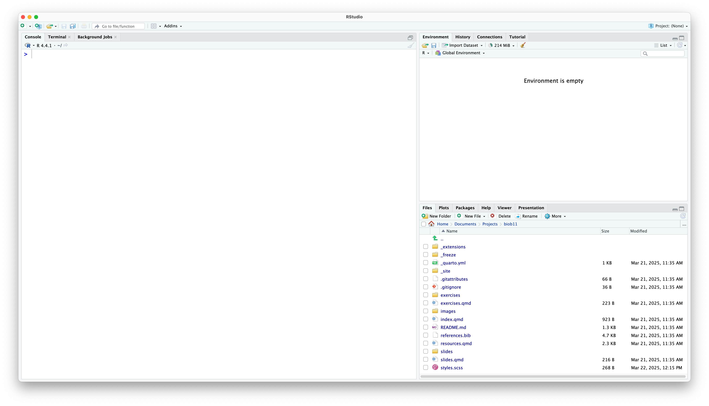

On this page you will find a guide to installing R and RStudio on your own device. This will be straight forward if you are using a Windows, macOS or Linux computer. For other devices (iPads, Android tablets, Chromebooks) it is not as simple. Use the guides below to install R and RStudio on your computer.
Installing R and RStudio
Why do I need both?
R is a programming language and software environment specifically designed for statistical computing and graphics.
RStudio is an integrated development environment (IDE) for R. It provides a user-friendly interface that makes it easier to write, debug, and visualize R code. RStudio includes features such as syntax highlighting, code completion, and tools for plotting, history, and workspace management. While R can be used on its own, RStudio enhances the user experience and productivity by providing a more organized and efficient workflow.
To use a car as a metaphor, R is the engine, and RStudio is the steering wheel, pedals, gear shifter, etc. It gives us a much easier way to interface and work with R.
So you need to install both. RStudio does nothing without R (like a car without an engine).
How to install R
To install R on your local device, you need to know what operating system your computer uses. If you are unsure, ask the teacher. Follow the steps in the appropriate section. If you already have R installed, I suggest you check it is up to date. To do that, open R and type R.version. If your major version is 4, then that should be OK for this course.
Click on the .pkg file link to download the installer for the latest version of R.
If you have a newer Mac with an Apple silicon CPU (M1, M2, M3, M4, etc), you must download the version specifically for Apple silicon CPU Macs that has arm64 in the package name (e.g. R-4.4.3-arm64.pkg).
If you have an older Mac with an Intel CPU (i3, i5, i7, etc), you must download the version specifically for Intel CPU Macs that has x86_64 in the package name (e.g. R-4.4.3-x86_64.pkg).
Once the download is complete, open the installer and follow the on-screen instructions to complete the installation.
Homebrew
If you use homebrew, you can install R and dependencies via:
# update indicessudo apt update -qq# install two helper packages we needsudo apt install --no-install-recommends software-properties-common dirmngr# add the signing key (by Michael Rutter) for these repos# To verify key, run gpg --show-keys /etc/apt/trusted.gpg.d/cran_ubuntu_key.asc # Fingerprint: E298A3A825C0D65DFD57CBB651716619E084DAB9wget-qO- https://cloud.r-project.org/bin/linux/ubuntu/marutter_pubkey.asc |sudo tee -a /etc/apt/trusted.gpg.d/cran_ubuntu_key.asc# add the repo from CRAN -- lsb_release adjusts to 'noble' or 'jammy' or ... as neededsudo add-apt-repository "deb https://cloud.r-project.org/bin/linux/ubuntu $(lsb_release-cs)-cran40/"# install R itselfsudo apt install --no-install-recommends r-base
If you are using a Linux distro other than the ones above, I trust you probably know enough to figure out how to install R yourself. Just be cautious as to the version of R you are installing. For this course, it needs to be >= 4.0. If you have any issues, let the teacher know.
ChromeOS
This is a lot more complicated, sorry.
You have three options:
Borrow a windows laptop from the IT department. This would be my first recommendation. But if you want to be able to use your own computer, see the next two options.
Try and install R locally using a linux container. This can work, but only reliably for Chromebooks that use an Intel/AMD CPU (not an ARM CPU). Ask if you are unsure.
You use R online instead. This has a few drawbacks depending on the method you use:
You use webR IDE. This should work for everything we do in the class, but if you accidentally refresh your page or close your browser without saving your work locally, it will be lost.
You use Posit Cloud. The free tier should be enough for everything we do here. The downside is you need an internet connection to use it.
Using Google Colab. The free tier should again be enough for everything in this class, however the interface is going to be very different.
Installing R locally (via a linux container)
I suggest you follow this guide carefully (it will take some time). Ask the teacher if you are stuck.
Using webR IDE
This is a “proof-of-concept” tool, and is not actually intended to be used for real data analysis. However, it is very functional, and we can use it for almost everything in this class. The place where things will be different is when it comes to making Rmarkdown files. This is not supported, but you can still write R scripts with comments, which is fine. You can find it here. However, I would really suggest just using a borrowed laptop over this option.
Using Posit Cloud
Posit are the company that make RStudio, and they offer a version of it online that works almost identically to the desktop version. All your computations are performed on Posit servers, and with the free plan, you are limited with how much compute time you can use per month. However, the default should be enough for this course. However, I would really suggest just using a borrowed laptop over this option. If you want to use it, you can find it here.
Google Colab
Colab uses Jupyter to run R code. It is a bit different to the RStudio interface. I personally find that Colab can be very frustrating if you are not a paying user, as you often have to “queue” for a CPU for your code to run on. If you really want to use this (if you are familiar with python/jupyter it might be very intuative), here is a guide to setup R with Colab, and here is a link to Colab itself. However, I would really suggest just using a borrowed laptop over this option.
iPadOS
There is no way to run R natively on your device. I strongly suggest you borrow a laptop from the IT department. If you really want to try using your own device, you can access R online. Here are a few options:
Using webR IDE
This should work for everything we do in the class, but if you accidentally refresh your page or close your browser without saving your work locally, it will be lost. It is a “proof-of-concept” tool, and is not actually intended to be used for real data analysis. However, it is very functional, and we can use it for almost everything in this class. The place where things will be different is when it comes to making Rmarkdown files. This is not supported, but you can still write R scripts with comments, which is fine. You can find it here. However, I would really suggest just using a borrowed laptop over this option.
Using Posit Cloud
Posit are the company that make RStudio, and they offer a version of it online that works almost identically to the desktop version. All your computations are performed on Posit servers, and with the free plan, you are limited with how much compute time you can use per month. However, the default should be enough for this course. However, I would really suggest just using a borrowed laptop over this option. If you want to use it, you can find it here.
Google Colab
Colab uses Jupyter to run R code. It is a bit different to the RStudio interface. I personally find that Colab can be very frustrating if you are not a paying user, as you often have to “queue” for a CPU for your code to run on. If you really want to use this (if you are familiar with python/jupyter it might be very intuative), here is a guide to setup R with Colab, and here is a link to Colab itself. However, I would really suggest just using a borrowed laptop over this option.
Android
In theory you can install R on your device, however you will need to either install a linux container and/or compile everything yourself (complicated and slow). For this reason, I strongly suggest you borrow a laptop from the IT department. If you really want to try using your own device, I will not provide instructions on how to install it locally (it is just too much work), but you can access R online. Here are a few options:
Using webR IDE
This should work for everything we do in the class, but if you accidentally refresh your page or close your browser without saving your work locally, it will be lost. It is a “proof-of-concept” tool, and is not actually intended to be used for real data analysis. However, it is very functional, and we can use it for almost everything in this class. The place where things will be different is when it comes to making Rmarkdown files. This is not supported, but you can still write R scripts with comments, which is fine. You can find it here. However, I would really suggest just using a borrowed laptop over this option.
Using Posit Cloud
Posit are the company that make RStudio, and they offer a version of it online that works almost identically to the desktop version. All your computations are performed on Posit servers, and with the free plan, you are limited with how much compute time you can use per month. However, the default should be enough for this course. However, I would really suggest just using a borrowed laptop over this option. If you want to use it, you can find it here.
Google Colab
Colab uses Jupyter to run R code. It is a bit different to the RStudio interface. I personally find that Colab can be very frustrating if you are not a paying user, as you often have to “queue” for a CPU for your code to run on. If you really want to use this (if you are familiar with python/jupyter it might be very intuative), here is a guide to setup R with Colab, and here is a link to Colab itself. However, I would really suggest just using a borrowed laptop over this option.
Scroll down and click on the “Download RStudio Desktop for macOS 13+” link (we have already installed R so can skip step 1 in their guide). If you are using a version of macOS that is <13, follow the link on the page to “download a previous version”.
Once the download is complete, open the installer and follow the on-screen instructions to complete the installation.
Homebrew
If you use homebrew, you can install R and dependencies via:
If your distro is automatically detected, click on the “Download RStudio Desktop for XXX” link (we have already installed R so can skip step 1 in their guide). If your distro is not automatically detected, scroll down to the bottom to find a suitable installer.
Once the download is complete, open the installer and follow the on-screen instructions to complete the installation.
Via various package managers
The version of RStudio available via some sources is very out-of-date. For this reason, I suggest either being cautious and checking it is actually up-to-date, or just downloading it from the above link.
ChromeOS
If you have installed R locally using the guide in the previous section, it will also guide you how to install RStudio.
If you are using a web version of R, there is no need to do anything else.
iPadOS
There is no way to install RStudio on your device.
Android
There is no (simple) way to install RStudio on your device.
How to use R on your own computer
Quite simply, in this course you should never open R, you should always open RStudio.
Check that everything has worked by launching RStudio. It should detect your R installation automatically, but if not, a window will open asking you to select it. If R does not appear here, I suggest you restart your computer first.
You should be met by a scene that looks like this:

A screenshot of a new RStudio installation on macOS.